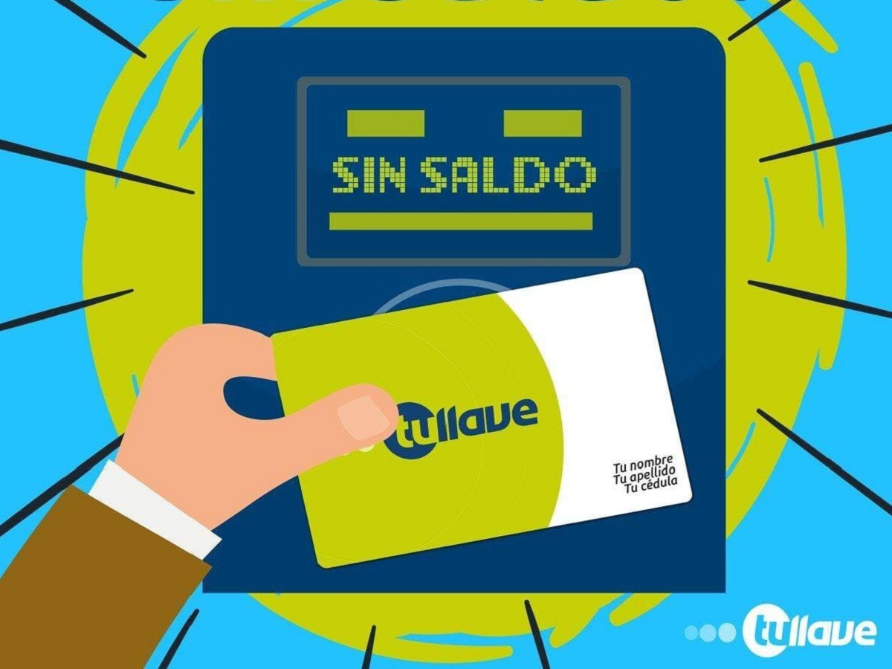

<body>
    
    <h2>SALDO DE TARJETA TU LLAVE TM</h2>
<script>
//Programa que permita capturar el saldo de su tarjeta de Transmilenio para ingresar al sistema, luego validar su ingreso –recuerde que el pasaje de TM es $2.650. Enviar mensajes respectivos dependiendo la validación de sistema//
var saldo=0;
const tm=2650;
saldo= parseInt(prompt("Ingrese saldo de su tarjeta de Transmilenio"));

 if( saldo >= tm )
{
    alert("Ingrese a Sistema Transmilenio");
}
 else
{
    alert("Recargue tarjeta, SALDO INSUFICIENTE ...");
}
</script>
</body>
